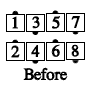
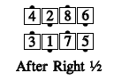
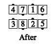
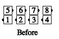
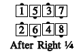
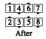

Similar to the "As Couples" concept, but the two dancers that work as a unit are a tandem. Nobody ever comes between the dancers in a tandem. For example, Tandem Swing Thru:
  
or Tandem Quarter Thru:
  
Common applications include Touch 1/4, Hinge, Scoot Back, Swing Thru, Walk and Dodge.
© Copyright 1983, 1986-1988, 1995-2017 Bill Davis, John Sybalsky and CALLERLAB Inc., The International Association of Square Dance Callers. Permission to reprint, republish, and create derivative works without royalty is hereby granted, provided this notice appears. Publication on the Internet of derivative works without royalty is hereby granted provided this notice appears. Permission to quote parts or all of this document without royalty is hereby granted, provided this notice is included. Information contained herein shall not be changed nor revised in any derivation or publication.